Controlling cell numbers: growth, proliferation and senescence
Cell cycle and cell death
Cell Biology (3MB001)
About this lecture
The cell-cycle control system decides how a cell divides. Today: whether it divides at all. A body keeps the right number of cells in every organ for decades, and loses that control in cancer.
After this lecture you can:
explain how mitogens, growth factors and survival factors set cell numbers, and how a mitogen signal reaches the restriction point;
explain the difference between cell growth (mass, controlled by mTOR) and cell division;
explain contact inhibition and what transformed cells do differently;
explain replicative senescence and the Hayflick limit with telomere shortening and telomerase, and name other triggers of senescence;
describe in outline how stem cells renew tissues and how cell lines escape the limits;
explain why growth-factor receptors, telomerase and senescent cells are drug targets.
ELO 7 (cell cycle and control of cell numbers), with disease examples for ELO 9.
The question: how does a body count its cells?
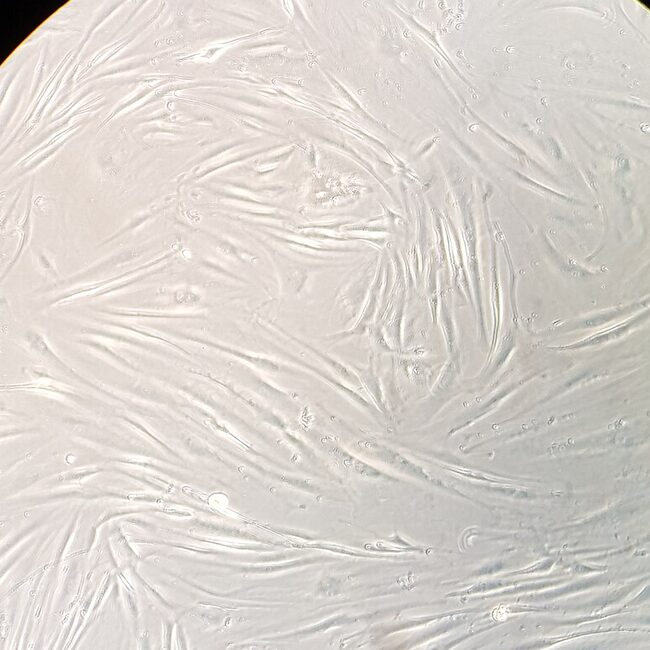
Human skin fibroblasts in a culture dish, close to confluence (phase contrast).
An adult has about 30 million million (3 × 10¹³) cells and replaces about 4 million cells every second, yet organs keep their size.
Remove two thirds of a rat liver: the rest regrows to the original size within about two weeks, and then stops.
Skin cells put in a dish divide until they cover the bottom, then stop. Split them into new dishes and they divide again, but only about 50 times. Then they stop for good.
What tells a cell to divide, and what makes it stop?
Three kinds of signal: divide, grow, survive
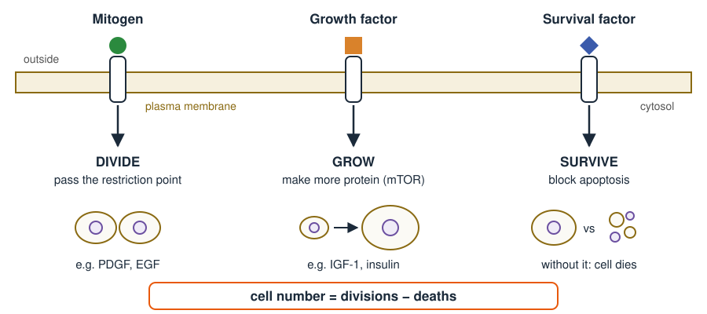
Mitogens make a cell pass the restriction point and divide. Growth factors make it build more protein and grow. Survival factors block apoptosis.
Each is a local, limited supply from neighbouring cells; cells compete for it. Many real factors (PDGF, IGF-1) do more than one job.
Without survival signals, most cells kill themselves (the apoptosis lecture): cell number is set by births and deaths.
Recap: from mitogen to the restriction point
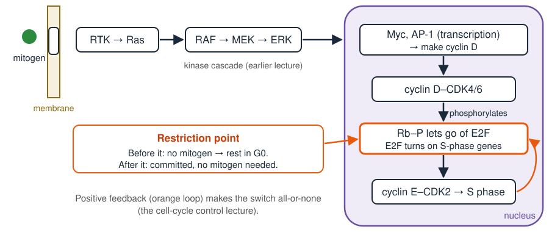
A mitogen activates an RTK → Ras → ERK (the kinase cascades lecture). In the nucleus, ERK turns on Myc and other genes, and the cell makes cyclin D.
Cyclin D–CDK4/6 phosphorylates Rb, Rb releases E2F, E2F turns on S-phase genes. Past this point the cell no longer needs the mitogen.
How do we know? Serum, not plasma, makes cells divide
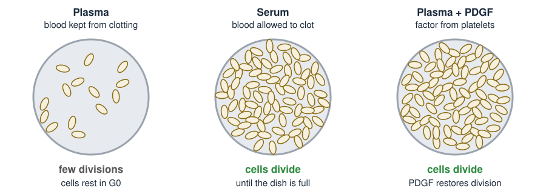
Fibroblasts divide in serum (blood allowed to clot) but hardly in plasma (blood that did not clot). Clotting platelets release a mitogen, later purified as PDGF (1974–79).
Serum starvation: remove serum and cells stop in G0; add it back and they enter S phase about 12–16 h later, all at the same time. Remove it again a few hours before S phase: the cells go on anyway. That point is the restriction point.
Growth is not division: mTOR controls cell size
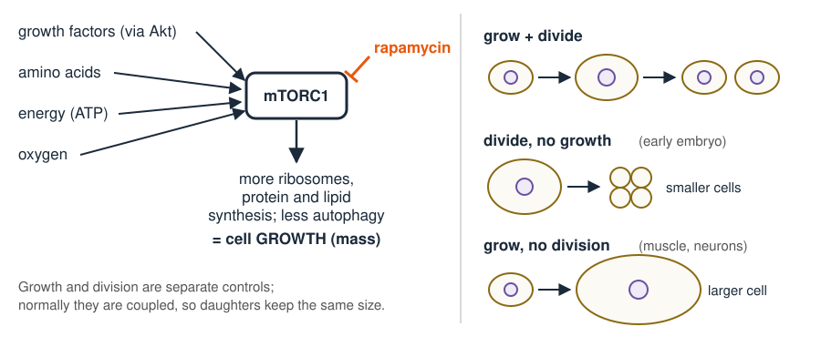
mTORC1 (the kinase cascades lecture) adds up growth factors, amino acids and energy, and switches on protein synthesis. The drug rapamycin blocks it: cells grow less and are smaller.
Normally a cell doubles its mass before it divides. Growth and division are controlled separately and then coupled.
Contact inhibition: cells stop when they touch
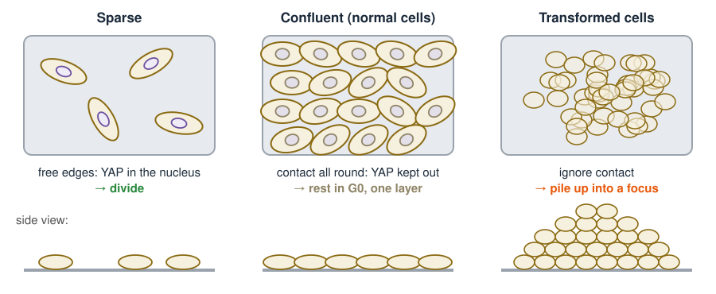
Normal cells divide until they form one confluent layer, then rest in G0. Cell contacts (through cadherins) and crowding keep the growth regulator YAP out of the nucleus (the Hippo pathway), and less growth factor is left per cell.
Transformed cells (for example with an active RAS oncogene) ignore contact and pile up into a visible focus: the classic test for an oncogene.
Replicative senescence: the Hayflick limit
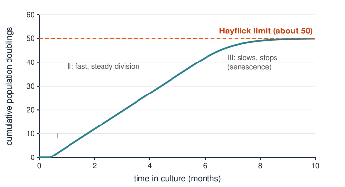
Hayflick and Moorhead (1961): human fetal fibroblasts divide about 40–60 times in culture, then stop for good. This is replicative senescence.
It counts divisions, not time: frozen cells, thawed years later, “remember” how many doublings they have left.
Cells from people with a fast-ageing disease (Werner syndrome) have fewer doublings left. Mouse cells behave differently (long telomeres, telomerase on).
Mouse fibroblasts stained for SA-β-gal. Top: early passage. Bottom: senescent (blue). Scale 100 µm.
Permanent arrest in G1: no mitogen can restart it. Not the same as resting in G0.
Large and flat, often with one big nucleus; full of lysosomes.
Markers used in labs: SA-β-gal (senescence-associated β-galactosidase, blue stain at pH 6), high p16 and p21 (CDK inhibitors), no proliferation marker (Ki-67).
Still alive and active: resists apoptosis, and secretes signals.
No marker is perfect: labs combine several.
Why chromosomes get shorter: the end-replication problem
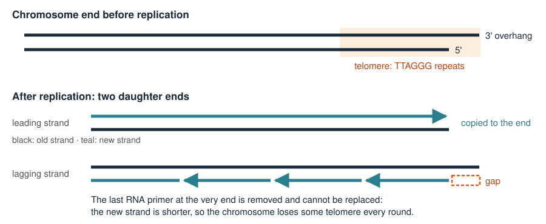
DNA polymerase needs a primer and works only 5′ → 3′. On the lagging strand, the last RNA primer at the very end leaves a gap.
So every replication loses some DNA at the ends. Human chromosome ends are telomeres: thousands of TTAGGG repeats, about 10–15 kb at birth. Dividing body cells lose about 50–200 bp per division.
Telomeres protect the ends, until they are too short
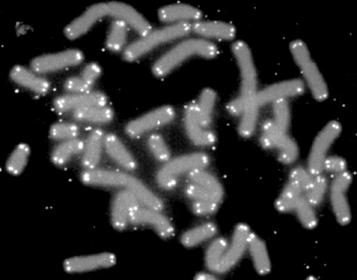
Human chromosomes (grey); telomeres stained by FISH (white dots at the ends).
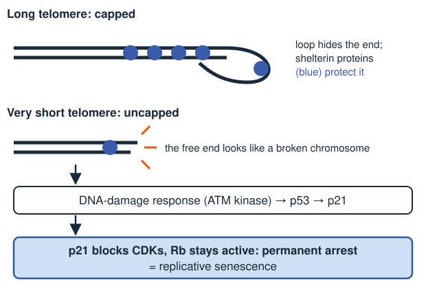
A protein cap (shelterin) and a loop hide the end. A very short telomere loses its cap and looks like a broken chromosome: the p53–p21 brake stops the cell for good.
Telomerase adds the repeats back
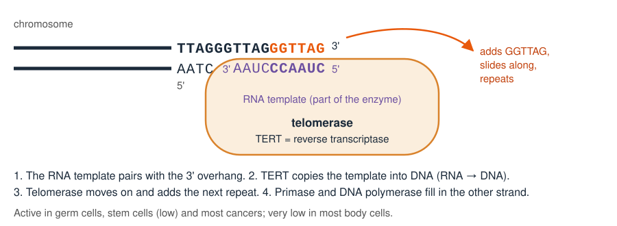
Telomerase = a reverse transcriptase (TERT) carrying its own RNA template. It extends the 3′ end by new TTAGGG repeats. Found in ciliates by Greider and Blackburn (1985); Nobel Prize 2009 with Szostak.
Active in germ cells and early embryos, low in stem cells, off in most body cells, on in about 85–90 % of cancers.
How do we know? Add telomerase, remove the limit
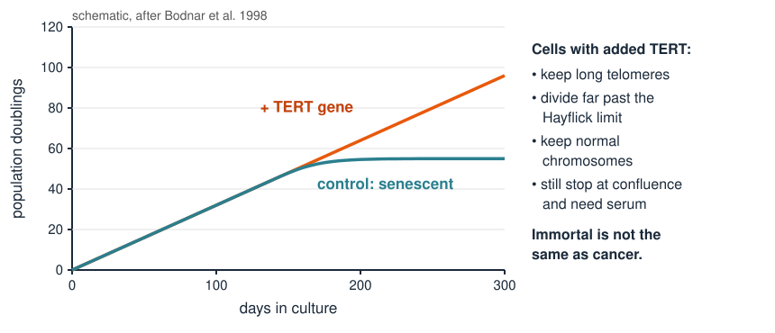
Bodnar et al. 1998: human cells given the TERT gene kept long telomeres and divided far beyond their limit; control cells became senescent. Shortening telomeres is the cause, not just a marker.
The immortal cells still showed contact inhibition, needed serum and did not form tumours.
Senescence is also a stress response
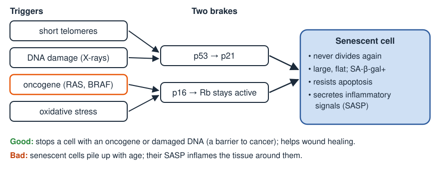
An oncogene in a normal cell triggers oncogene-induced senescence: a barrier to cancer.
SASP: senescent cells secrete inflammatory signals that recruit immune cells and help repair, but in old tissues cause harm.
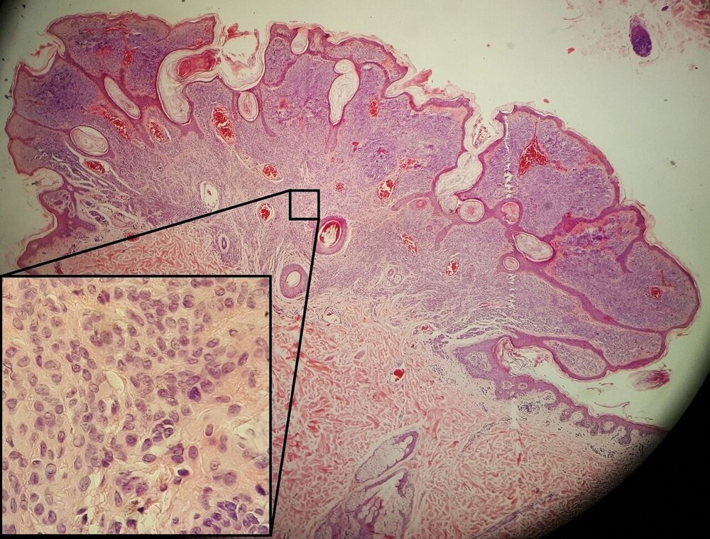
A benign mole (melanocytic nevus). Inset: nests of melanocytes. Many moles carry BRAF V600E, yet stop growing.
Stem cells renew tissues (in brief)
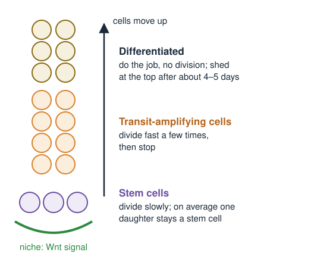
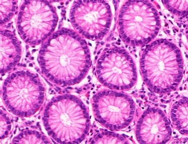
Normal colon, crypts cut across (H&E). Stem cells sit at the bottom of each crypt.
Self-renewal: on average one daughter stays a stem cell, the other differentiates. Transit-amplifying cells make the numbers.
The niche (Wnt in gut crypts; the fate signalling lecture) keeps stem cells as stem cells.
Renewal times: gut lining 3–5 days, epidermis about a month, red blood cells 120 days; most neurons never.
How cell lines escape the limits
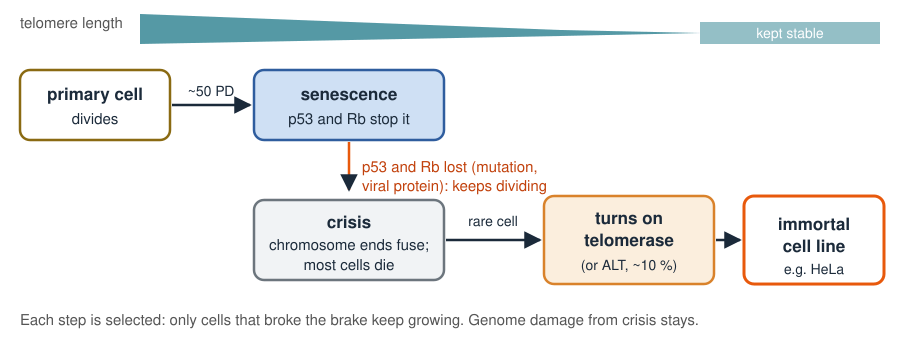
Losing p53 and Rb lets cells pass senescence, but telomeres keep shrinking until crisis. Only a cell that turns on telomerase (or ALT, copying between telomeres) becomes immortal.
HeLa (1951): the virus HPV18 makes E6, which destroys p53, and E7, which blocks Rb; telomerase is on.
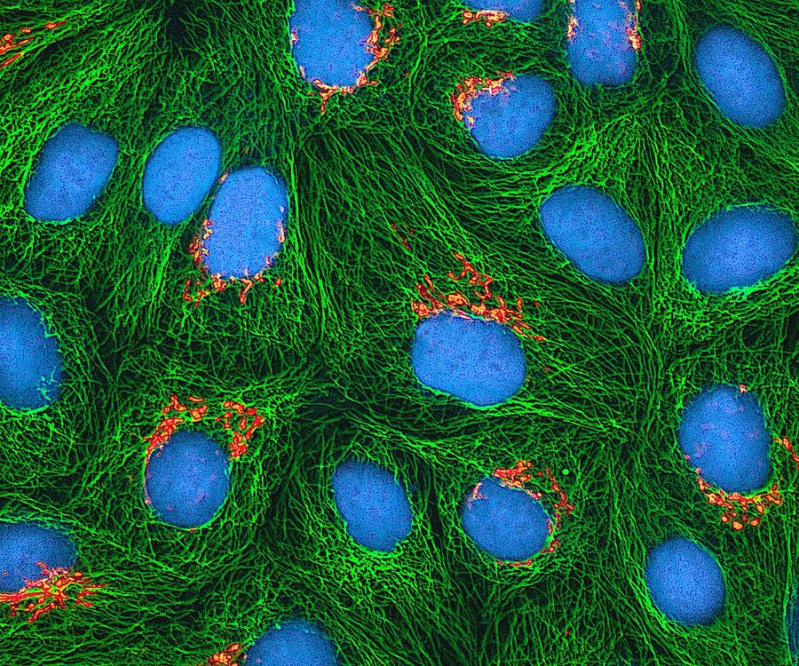
HeLa cells: microtubules (green), Golgi (orange), DNA (cyan).
Why it matters: growth-factor receptors as cancer drug targets
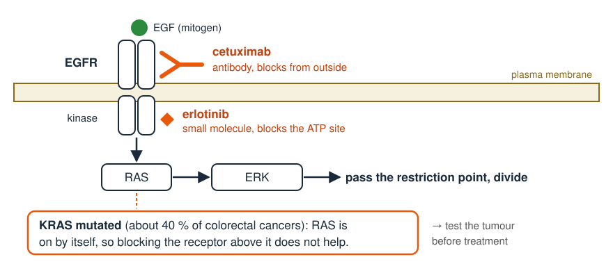
A cancer cell that makes its own mitogen signal, through an amplified or mutated receptor, divides without asking. Blocking the receptor puts the brake back, if the receptor is the cause.
Cetuximab (anti-EGFR antibody) helps in colorectal cancer only when RAS is not mutated: a mutation below the receptor makes the drug useless. More in Sjukdomslära and drug development.
Why it matters: telomerase and senescent cells as targets
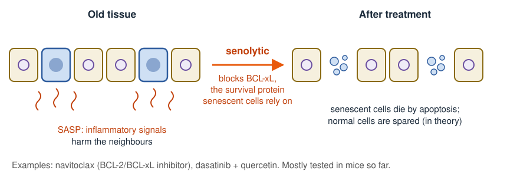
Telomerase in cancer: TERT promoter mutations are common in melanoma and glioblastoma. Imetelstat, an oligonucleotide that blocks the template, was approved in 2024 for a bone-marrow cancer (myelodysplastic syndrome); main side effect: low blood counts.
Too little telomerase: inherited mutations (dyskeratosis congenita) give bone-marrow failure.
Senolytics kill senescent cells, for example by blocking BCL-xL (the apoptosis lecture). Removing senescent cells made mice live longer and healthier.
Caveats: in humans only small trials, no proven benefit yet; senescence also protects against cancer and helps wound healing; navitoclax lowers platelets.
Summary
Cell number = divisions − deaths. Cells divide only with mitogens (which act up to the restriction point: Ras–ERK → cyclin D–CDK4/6 → Rb–P → E2F), grow with growth factors (mTORC1), and survive with survival factors.
Contact inhibition stops normal cells reversibly at confluence (G0); transformed cells pile up.
Normal human cells stop permanently after about 50 doublings (Hayflick limit, replicative senescence): telomeres shorten at each division until an uncapped end triggers p53–p21. Telomerase prevents this.
Senescence is also a stress response (DNA damage, oncogenes): a barrier to cancer, but senescent cells secrete inflammatory SASP. Stem cells in niches renew tissues.
Cell lines and cancers escape by losing p53/Rb and switching on telomerase. Drugs target growth-factor receptors, telomerase and, experimentally, senescent cells.
Read more (optional): Alberts et al., Molecular Biology of the Cell, 7th ed., ch. 17 and 22.